Experiments
模型在不同场景中的表现
官方示例检验推理，留出配置检验场景族内的学习效果。
官方Cornell示例
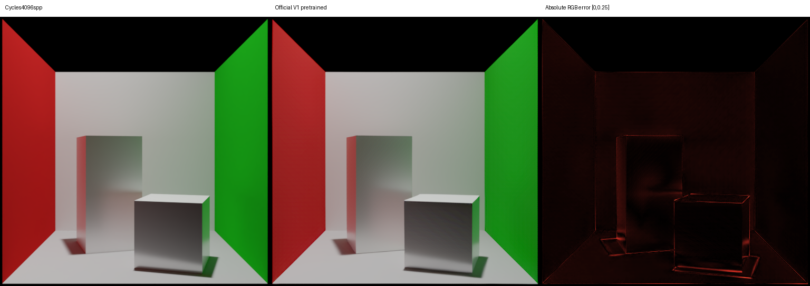
512×512，Cycles 4096 spp上限，seed 11。PSNR 38.30 dB，SSIM 0.9771；Reinhard线性RGB、data_range=1，展示使用EV0和sRGB。
版本与测量记录
作者实现固定commit b128481；使用官方固定预训练权重，未对该示例训练。
测量JSONCornell场景族
128训练、32验证、32测试配置，每配置4视角。官方权重在128张验证图上的PSNR为8.63 dB；从头训练10000步后为21.46 dB、SSIM为0.8163。此场景族与上方官方示例不同，分数不能直接比较。
每配置1153个三角形，256×256。训练暂停，保留10000步检查点；尚未评估测试集。
固定视角与完整验证指标 →历史相机与光源实验
外部相机与光源 · 32.17 dB
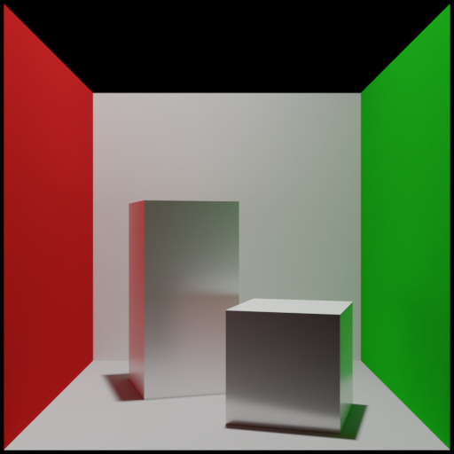
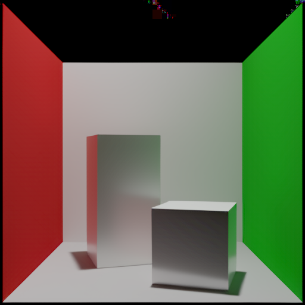
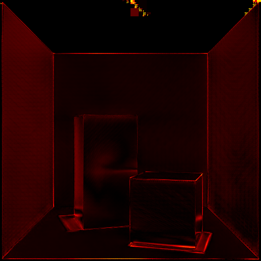
内部相机 · 12.60 dB
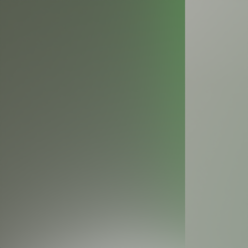
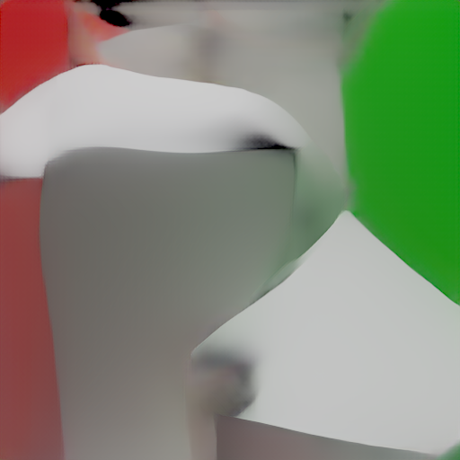
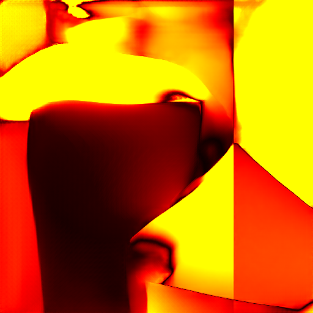
内部光源 · 13.36 dB
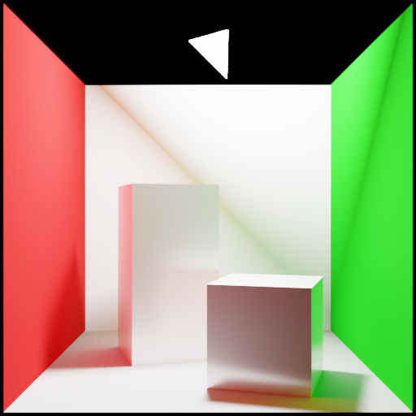
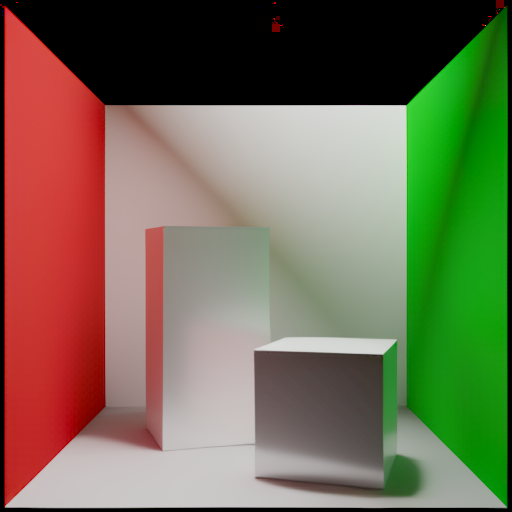
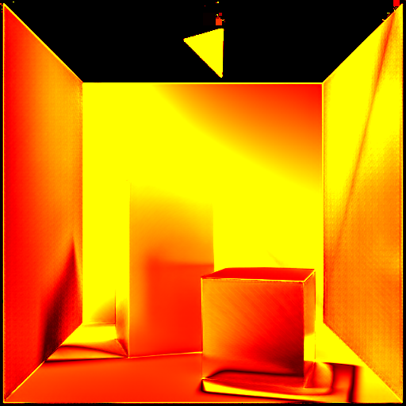
大面积光源 · 2.75 dB
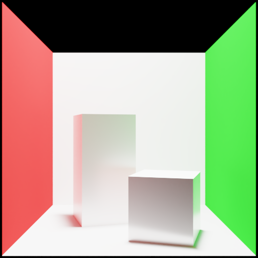
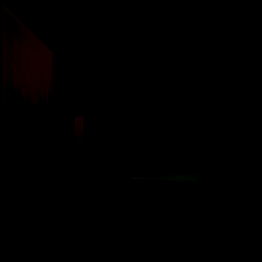
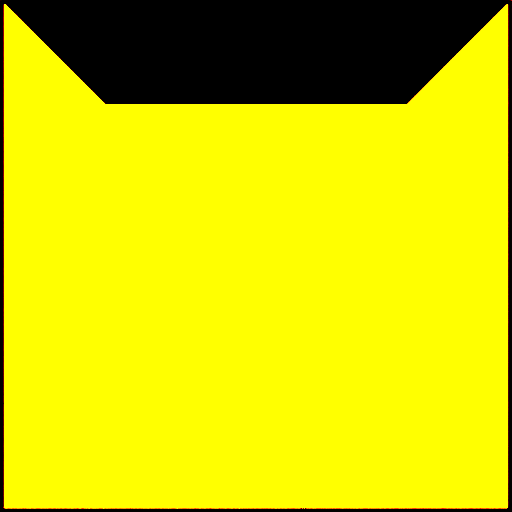
9光源直接预测 · 15.32 dB
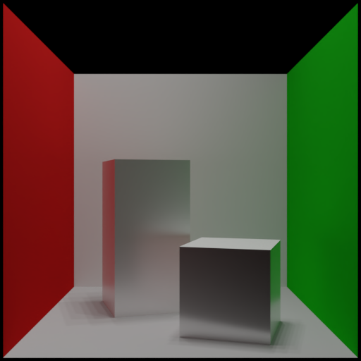
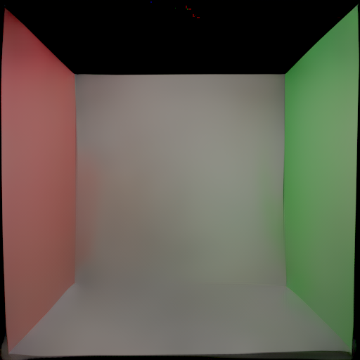
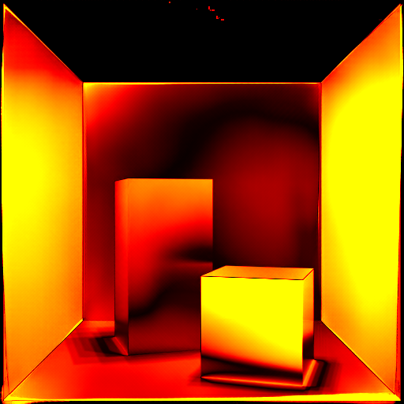
逐光源预测后相加 · 10.29 dB

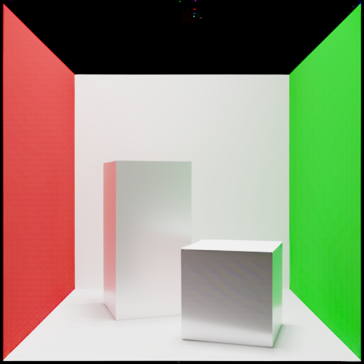
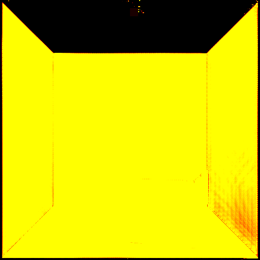